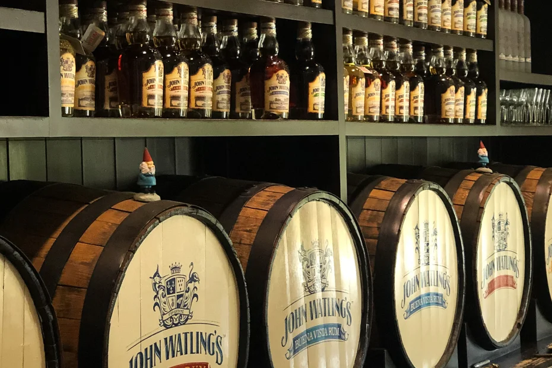
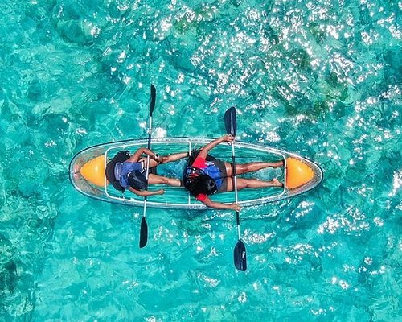
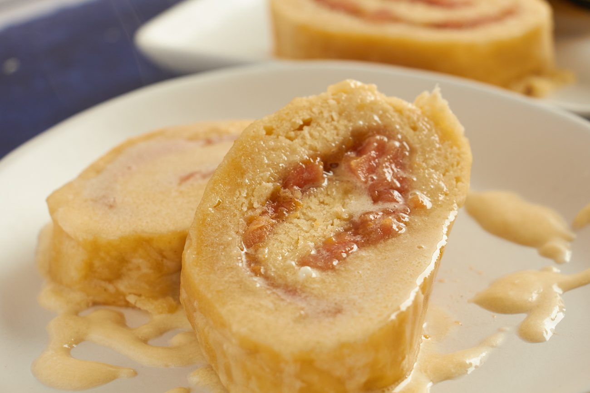
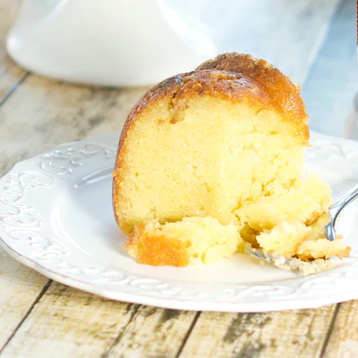

Water
Snorkel Nassau's Coral Reefs
Dive into electric blue waters teeming with tropical fish, sea turtles, and vibrant coral gardens.
schedule Half day
directions_boat Boat transfer
Nassau, The Bahamas
Crystal-clear waters, vibrant culture, and endless adventures await — all steps from your door at SunFun Resort.
Discover ActivitiesTop Picks
From swimming with pigs to snorkeling vivid coral reefs, here's what makes Nassau unforgettable.




All Activities
Every experience can be arranged through our front desk — we'll handle transport, booking, and all the details.
 Water & Beach
Water & Beach
Step onto our quiet stretch of powdery sand just moments from your room. Loungers, umbrellas, and turquoise views included.
Adventure
Board a boat to the famous pig beach, feed and swim alongside the friendly Bahamian pigs, then relax on a pristine sandbar.
 Water & Beach
Water & Beach
Guided snorkel adventures over Nassau's stunning coral reefs. Spot sea turtles, rays, and tropical fish in crystal waters.
 Culture
Culture
Discover colonial forts, the vibrant straw market, and Queen's Staircase with a knowledgeable local guide.
 Culture
Culture
Learn cracked conch, peas 'n' rice, and guava duff with a local chef. Small groups, hands-on, and absolutely delicious.
Glide across Nassau Harbour as the sky turns gold and pink. Cocktails, sea breeze, and unforgettable views.

Water & BeachExplore the calm turquoise waters at your own pace. Rentals and guided paddling available near the resort.
 Dining
Dining
From coconut French toast to honey garlic salmon bowls, our café serves island-inspired dishes all day long.
Bahamian Food & Drink
Nassau's food culture runs deep — shaped by African, Caribbean, and British roots. These are the dishes and drinks you simply cannot leave without trying.
 🐚 National Dish
🐚 National Dish
Raw conch tossed with diced tomatoes, onions, sweet peppers, scotch bonnet, and a bright squeeze of lime and orange juice. Served fresh — practically still from the sea.
 🍜 Island Classic
🍜 Island Classic
Hearty tomato-based soup packed with conch, potatoes, root vegetables, and island spices. Served piping hot with a side of Johnny Cake to soak it all up.
 🔥 Local Favourite
🔥 Local Favourite
Conch meat tenderized with a mallet, dipped in seasoned batter, and deep-fried to golden perfection. Crispy outside, tender inside — served with peas 'n' rice and coleslaw.
 🐟 Sunday Classic
🐟 Sunday Classic
Fresh grouper or snapper marinated in lime, then simmered in a rich tomato-based sauce with onions, thyme, and island spices. Best eaten with Johnny Cake on the side.
 🦞 Prized Delicacy
🦞 Prized Delicacy
Spiny lobster pulled straight from the turquoise shallows — smaller and sweeter than its Atlantic cousin. Grilled, steamed, or broiled with butter and a squeeze of fresh lime.
 🍚 Island Staple
🍚 Island Staple
Pigeon peas cooked down with rice, tomatoes, thyme, and sweet peppers — the essential side dish of the Bahamas. You'll find it on virtually every local plate, and for good reason.
 🍲 Comfort Food
🍲 Comfort Food
The Bahamian answer to soup — slow-cooked chicken in a tangy broth of onions, lime, potatoes, and warm spices. A breakfast staple on weekends and a go-to hangover cure for locals.

🍮 Must-Try DessertSoft dough rolled with guava paste, boiled, sliced, and crowned with a warm rum or brandy butter sauce. The iconic Bahamian dessert — sweet, pillowy, and totally unforgettable.

🎂 Take-Home TreatA dense, moist cake soaked in Ole Nassau rum, available in pineapple, coconut, banana, and chocolate flavors. The Bahamas Rum Cake Factory is the definitive stop for this classic souvenir.
The Bahamian Signature
Coconut rum, apricot brandy, pineapple juice, and orange juice — named after the island's own music and dance tradition. No two bars make it exactly the same.
The Classic
Dark rum, coconut liqueur, coffee liqueur, pineapple and orange juice — vibrant, fruity, and completely synonymous with a Bahamian beach day. Often served frozen.
Born at Arawak Cay
Gin, fresh coconut water, sweetened condensed milk, and nutmeg — the original backyard drink of the Bahamas. Creamy, sweet, and deceivingly strong.
Named for a calypso classic
Light rum, Galliano, crème de banana, pineapple and orange juice — a bright canary-yellow cocktail with a zingy citrus kick.
Bahamian Craft Rum
Small-batch rum distilled at Nassau's Buena Vista Estate using hand-harvested Bahamian sugarcane molasses, aged in American white oak. Free tour and tasting at the distillery.
The Local Lager
The Bahamas' own brew — a light, crisp lager that's been a local institution since 1969. Its name comes from the sound of cowbells in Junkanoo. Cold Kalik, warm sun, white sand: perfection.
Our front desk team knows all the best spots — ask us for a personal recommendation or reservation help.
Ask Our TeamNassau Explorer
Beaches, tours, restaurants, and grocery stores — all the local knowledge our team has gathered, mapped for you.
Insider Tips
Head out between 8–11am for calmest waters and best visibility before afternoon breezes pick up.
Pig swimming tours fill up fast — ask the front desk to reserve your spot the evening before.
The Nassau Straw Market is best navigated with small bills in hand. ATMs nearby on Bay Street.
A 10-minute walk west brings you to one of the most spectacular sunset views in the Caribbean.